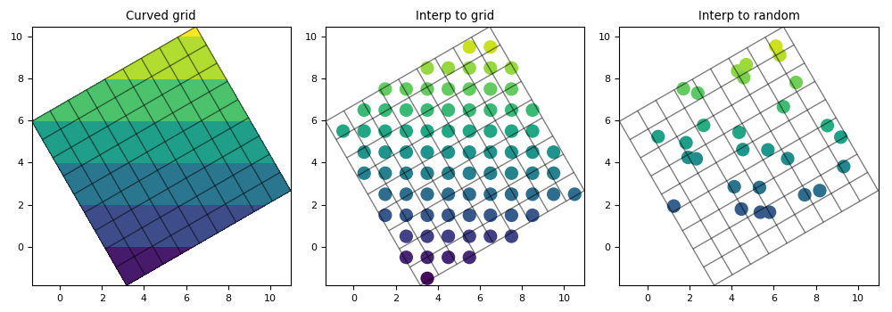

3.5.6.1. test_regrid_curvedinterpolator.py – Test the class CurvedInterpolator¶

"""Test the class :class:`~vacumm.misc.grid.regridding.CurvedInterpolator`"""
from vcmq import (P, N, set_grid, plot2d, MV2, add_grid, code_file_name, os,
create_time, CurvedInterpolator, rotate_grid)
# Curved grid
nxy = 10
nt = 5
lon = N.arange(nxy*1.)
lat = N.arange(nxy*1.)
time = create_time((nt, ), 'years since 2000')
gridi = rotate_grid((lon, lat), 30)
xxi = gridi.getLongitude()[:].filled()
yyi = gridi.getLatitude()[:].filled()
vari = MV2.resize(yyi, (nt, nxy, nxy))
vari.setAxis(0, time)
set_grid(vari, gridi)
kw = dict(vmin=vari.min(), vmax=vari.max())
P.figure(figsize=(10, 3.5))
P.subplot(131, aspect=1)
P.contourf(xxi, yyi, vari[0].asma(), **kw)
add_grid(gridi, edges=False, centers=-1)
xylims = (xxi.min(), xxi.max(), yyi.min(), yyi.max())
P.axis(xylims)
P.title('Curved grid')
# Interpolate to grid
xg, yg = N.meshgrid(N.arange(-3.5, 14.5), N.arange(-3.5, 14.5))
nxyg = xg.shape
cig = CurvedInterpolator(gridi, (xg, yg), g2g=True)
varog = cig(vari)
P.subplot(132, aspect=1)
P.scatter(xg, yg, c=varog[0].asma(), s=120, linewidth=0, **kw)
add_grid(gridi, edges=False, centers=-1)
xylims = (xxi.min(), xxi.max(), yyi.min(), yyi.max())
P.axis(xylims)
P.title('Interp to grid')
# Interpolate to random
nr = 40
xr = P.random(nr)*nxy
yr = P.random(nr)*nxy
cir = CurvedInterpolator(gridi, (xr, yr))
varor = cir(vari)
P.subplot(133, aspect=1)
P.scatter(xr, yr, c=varor[0].asma(), s=120, linewidth=0, **kw)
add_grid(gridi, edges=False, centers=-1)
xylims = (xxi.min(), xxi.max(), yyi.min(), yyi.max())
P.axis(xylims)
P.title('Interp to random')
# Finalize
P.tight_layout()
figfile = code_file_name(ext='png')
if os.path.exists(figfile): os.remove(figfile)
P.savefig(figfile)
P.close()